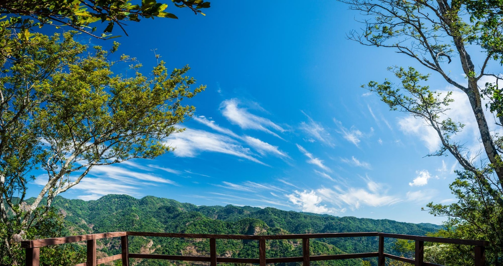

El Imposible
Es el parque nacional más grande del país
y uno de los principales pulmones naturales de El Salvador.
Ofrece senderos, miradores y una importante diversidad de flora y fauna.
Es ideal para quienes buscan contacto directo con la naturaleza y actividades
como caminatas guiadas y observación de aves.